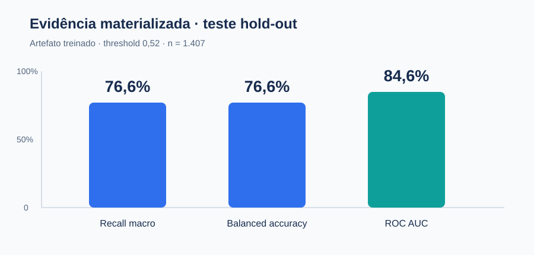
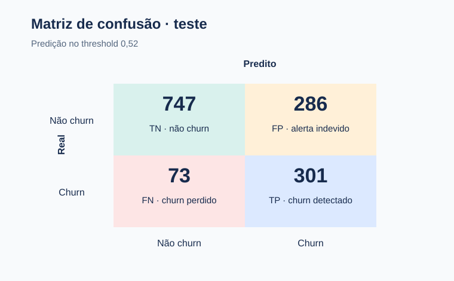

Predição de churn com pipeline modular e decisão auditável
Um pipeline de classificação desbalanceada que transforma probabilidade de churn em priorização de retenção, com pré-processamento reprodutível, API FastAPI e avaliação em hold-out.
7.032 clientes · 19 atributos · split estratificado 80/20 · threshold 0,52
O objetivo é encontrar risco acionável
O dataset Telco Churn apresenta uma classe churn minoritária de aproximadamente 26,6%. O projeto prioriza recall macro e acurácia balanceada para evitar que a taxa da classe majoritária masque os casos de churn.
Leitura principal: o modelo produz um ranking operacional de risco; não demonstra que uma intervenção causa retenção.
O resultado atual vem do artefato treinado
O artefato salvo em models/churn_pipeline.pkl.gz foi confrontado com o split determinístico (`random_state=738`). A avaliação abaixo usa probabilidades contínuas para ROC AUC e threshold 0,52 para as métricas de classificação.


O hold-out apoia triagem, não ROI comprovado
O teste contém 1.407 clientes. O resultado reproduzível é Recall macro = 0,7640, Balanced Accuracy = 0,7640, Precision macro = 0,7119 e ROC AUC = 0,8355. A matriz é [[747, 286], [73, 301]] na convenção [[TN, FP], [FN, TP]].
O que a evidência sustenta
- Comparação interna do pipeline no split hold-out.
- Priorização de clientes para investigação de retenção.
- Contrato de entrada e resposta exposto por API.
O que não sustenta
- Superioridade causal de uma oferta.
- Receita preservada ou ROI observado.
- Generalização fora do dataset telecom.
Correção de consistência: uma versão anterior desta página usava 76,6% / 84,6%, medidos em um artefato retreinado com outra divisão treino/teste (semente 738) que a dos notebooks. O artefato foi realinhado à divisão dos notebooks (semente 42) e reproduz o campeão: 76,4% / 83,5%.
A lógica compartilhada está separada da narrativa
O projeto é modular: dados, features, avaliação e visualizações vivem em churn_project/; os notebooks documentam a exploração e serve_model.py expõe o contrato de inferência.
Módulos compartilhados
data.py: leitura, limpeza e split estratificado.features.py: transformações e seleção.evaluation.py: métricas e comparações.viz.py: gráficos reutilizáveis PT/EN.
Fluxo de entrega
- Notebook PT-BR e EN-US consomem a mesma base de código.
train_model.pysalva pipeline e metadados.serve_model.pyoferece/health,/predicte/model/info.- Testes cobrem dados, pipeline e API.
Uso recomendado e fronteiras
Pode sustentar
- Portfólio técnico e investigação exploratória.
- Priorização inicial para um piloto controlado.
- Reprodução da inferência com defaults documentados.
Não pode sustentar
- “Production-ready” sem monitoramento e validação temporal.
- US$ 3,2M de receita ou ROI 4,3x como resultado observado.
- Intervenção automática sem experimento A/B.
Fronteira decisória: antes de uso operacional, validar com dados temporais, custos reais e experimento de retenção; tratar as estimativas de impacto como hipóteses, não como benefício realizado.
Fontes e reprodução
O relatório é uma camada de comunicação. O código modular, notebooks, testes e artefato versionado permanecem como fonte técnica do projeto.